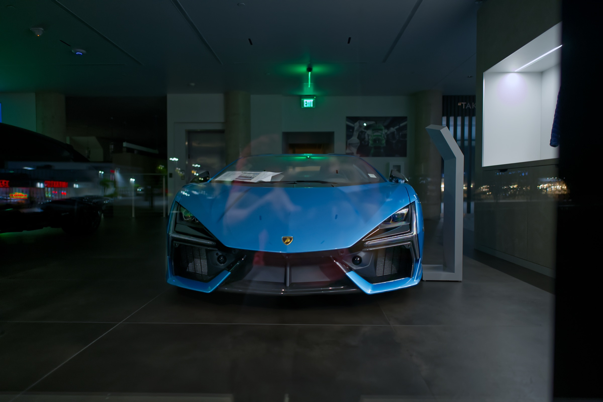
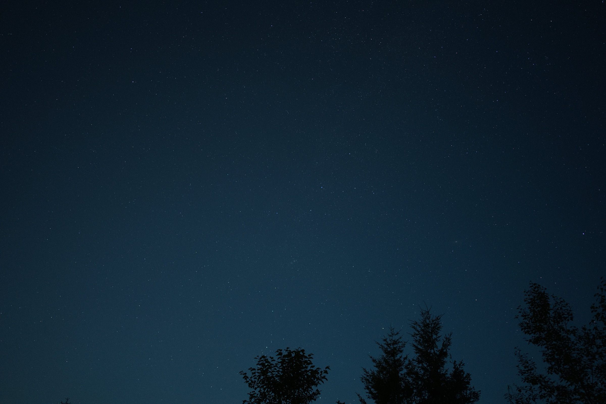
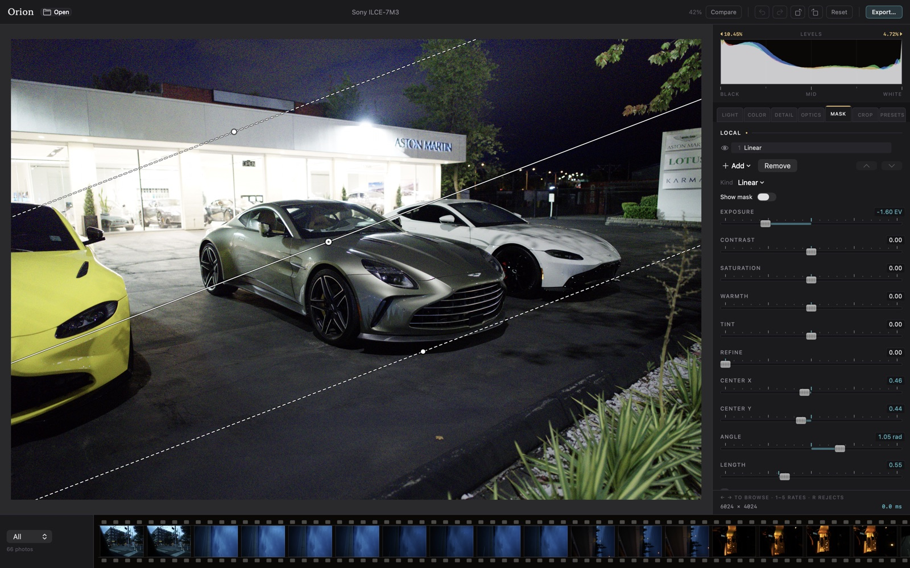
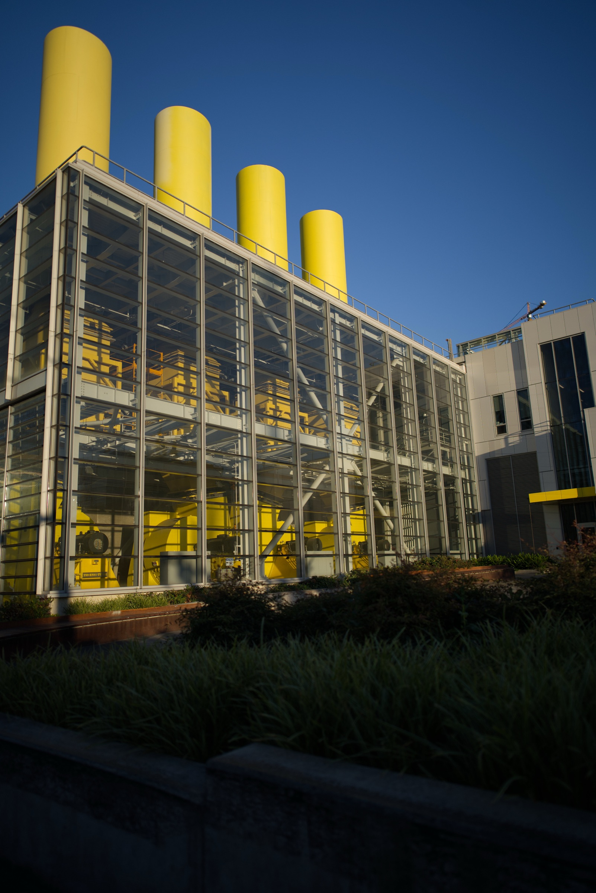
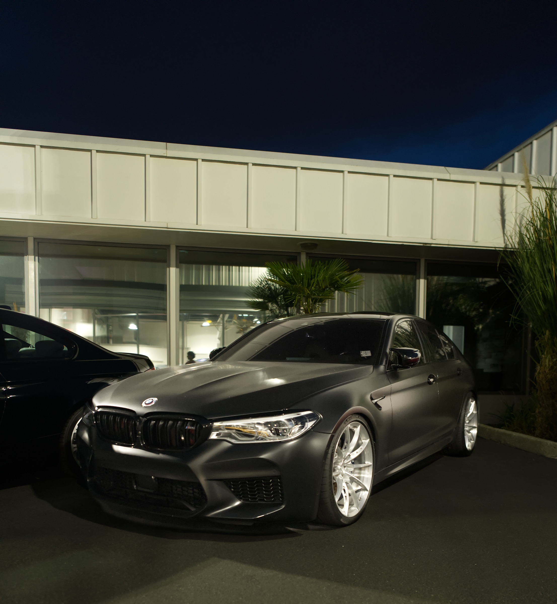

No subscription, no cloud. 24 megapixels live under your hand.
$0forever 1,558lenses profiled 100%your files
Photo editors got rented out. Orion is software you keep.

9.29 MS
Instant updates · an exposure drag · 24 MP · full resolution

−1.60 EV
Local light · a gradient dragged onto the photograph

Color / you can check
Built to the DNG spec, checked against the camera's own rendering.

Every filter cites its paper
What isn't sourced yet is written down too, in public.
- Haze removalHe, Sun & Tang · CVPR 2009
- Local contrastParis, Hasinoff & Kautz · SIGGRAPH 2011
- Shadow recoveryHessel & Morel · WACV 2020
- Film looksAdobe Cube LUT spec · 2013
- Mask falloffPerlin · ACM TOG 2002
No lock-in
Plain XMP beside the file. Delete the app and nothing follows.
_PIC8220.ARWthe photograph
_PIC8220.xmpyour edits
Working today
- Exposure, contrast, highlights, shadows, whites, blacks
- White balance, color grading, tone curves
- Crop, straighten, rotate
- Distortion and vignetting for 1,558 lenses
- Haze removal, clarity, shadow recovery
- Film looks from any
.cubefile - Gradient masks you drag onto the photo
- Export with your location stripped by default
Not yet
- Brush masks: engine built, brush not yet wired
- Combining masks: add, subtract, intersect
- Selecting a subject or a sky
- Spot and blemish removal
- Presets, and copying settings between photos
Listed because it is true. Nothing on this page pretends to exist.

Built by one person, in the open
Every decision, measurement and mistake is in the repository.
In development · not yet released